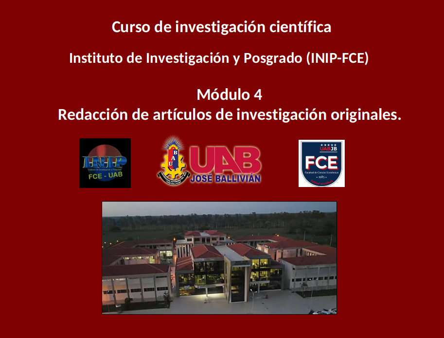
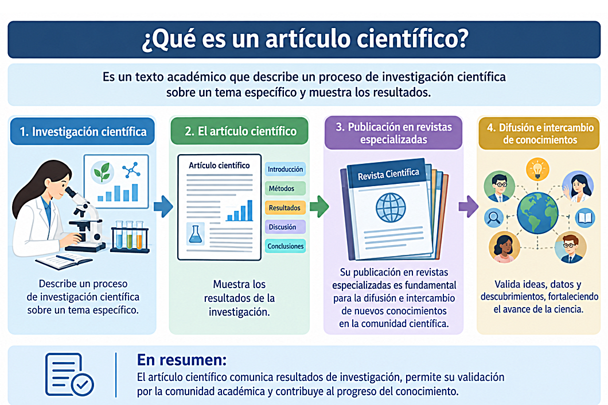
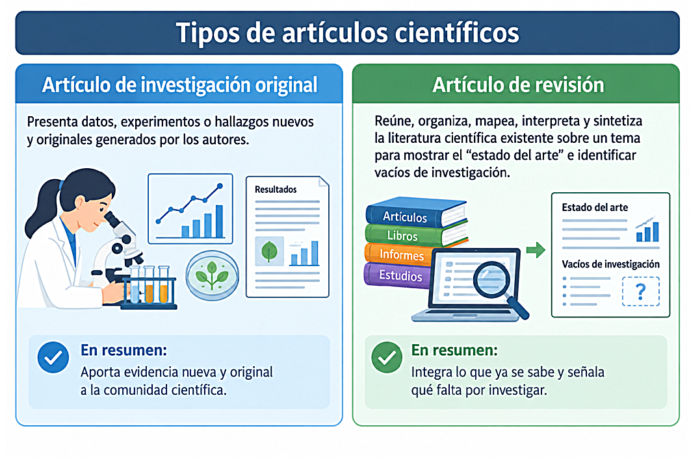
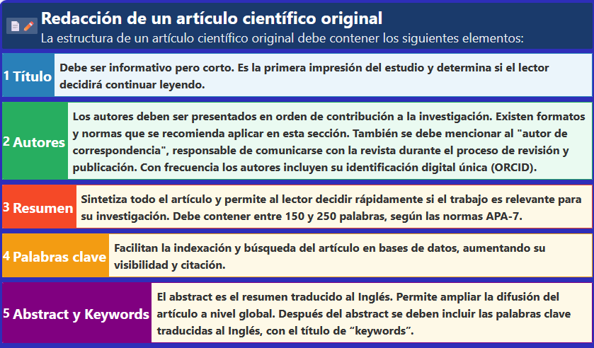
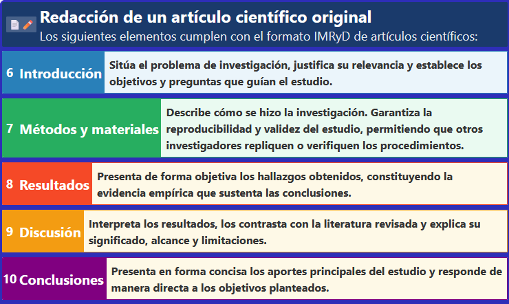
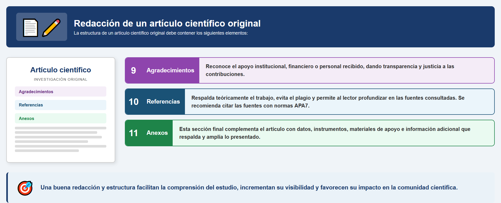
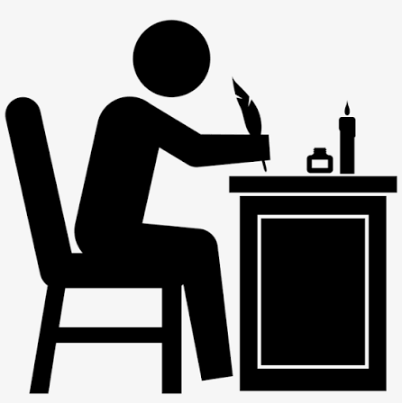
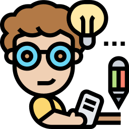

Toca la pantalla o presiona la flecha para comenzar la presentación.






Paso 1: Redacta primero los resultados, que son el núcleo del artículo. Elabora tablas, figuras y redacta los hallazgos, ya que de ellos depende todo lo demás.
Paso 2: Redacta como segundo paso los Métodos y Materiales, detallando exactamente los pasos que seguiste para obtener los resultados, de tal manera que el estudio sea reproducible.

Paso 3: Escribe la Discusión y Conclusiones: Explica el significado de tus resultados, compáralos con la literatura previa y define las conclusiones y limitaciones.

Paso 4: Escríbe la introducción casi al final del proceso; ahora que sabes exactamente qué descubriste y cómo lo discutiste, puedes plantear con precisión el problema, los antecedentes y el objetivo de la investigación.
Paso 5: Ahora puedes escribir el Resumen, porque constituye una síntesis condensada de todo el trabajo anterior. Solo podrás redactar un buen resumen cuando el artículo entero esté terminado.
Paso 6: Título y Palabras clave: Refínalos al final para asegurarte de que reflejen con exactitud el contenido definitivo del manuscrito. No olvides verificar que tus referencias bibliográficas cumplan las normas exigidas por la revista.
Identificación universal ORCID: Es recomendable que los investigadores obtengan su código de identificación ORCID, para aumentar su visibilidad internacional y facilitar que los sistemas de indexación rastreen y contabilicen de forma correcta sus citas bibliográficas y el impacto de su trabajo académico. También previene la confusión en las referencias bibliográficas de autores homónimos.
Identificación universal ORCID: El ORCID funciona como un identificador gratuito único, regulado, universal y persistente, equivalente al pasaporte de un científico en la comunidad internacional. Está conectado con grandes bases de datos académicas y es solicitado con frecuencia por revistas científicas, convocatorias de becas y proyectos de investigación.